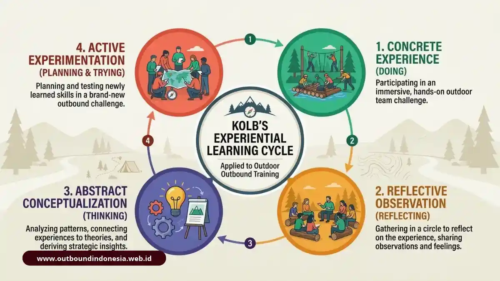

Outbound training adalah metode pelatihan berbasis pengalaman langsung yang memakai permainan, tantangan fisik, dan simulasi di ruang terbuka. Peserta belajar berkomunikasi, memimpin, dan memecahkan masalah dengan mengalami situasinya, lalu merefleksikan hasilnya bersama fasilitator, sehingga perubahan perilaku dapat dibawa ke pekerjaan sehari-hari.
Apa Itu Outbound Training?
Outbound training, juga dikenal sebagai outbound management training atau outbound learning, adalah intervensi perilaku yang memanfaatkan lingkungan luar ruang sebagai tempat belajar.
Pendekatan ini bersumber dari filosofi Outward Bound, yakni strategi pengembangan tim yang dilaksanakan melalui perjalanan eksplorasi dan tantangan lingkungan alam.
Sasaran utamanya adalah kebiasaan kerja, bukan hiburan. Setiap permainan dirancang sebagai simulasi kecil dari situasi organisasi, misalnya berbagi peran, mengambil keputusan cepat, atau menyampaikan masukan kepada rekan.
Setelah tantangan selesai, fasilitator mengajak peserta menghubungkan pengalaman itu dengan pekerjaan nyata.
Metode ini sejalan dengan prinsip belajar orang dewasa. Orang dewasa cenderung belajar lebih baik ketika mengarahkan dirinya sendiri, menghadapi masalah yang terasa nyata, belajar sambil mempraktikkan, dan merasa aman secara psikologis untuk mencoba tanpa takut dihakimi.
Bagaimana Experiential Learning dan Siklus Kolb Bekerja dalam Outbound?
Siklus belajar David Kolb menjelaskan bahwa pembelajaran terjadi lewat beberapa tahap berurutan, yaitu mengalami, merefleksikan, menyimpulkan konsep, lalu menguji penerapannya.

Diagram empat tahap siklus belajar Kolb: Mengalami, Merefleksikan, Konseptualisasi, dan Eksperimen AktifDalam sesi outbound, tahap mengalami adalah saat peserta menjalankan tantangan. Tahap refleksi muncul ketika fasilitator bertanya tentang apa yang terjadi dan apa yang dirasakan. Pada tahap konseptualisasi, kelompok merumuskan pelajaran yang bisa dipakai.
Tahap terakhir adalah eksperimen aktif, yaitu mencoba pelajaran itu pada tantangan berikutnya atau di tempat kerja.
Siklus ini menjelaskan mengapa debriefing tidak boleh dilewati. Tanpa refleksi, permainan hanya berhenti sebagai pengalaman menyenangkan yang cepat dilupakan.
Apa Bedanya Outbound Training dengan Outing Biasa dan Pelatihan Kelas?
Outbound training berbeda dari outing karena memiliki tujuan belajar terukur dan sesi refleksi, serta berbeda dari pelatihan kelas karena materinya dialami langsung oleh peserta.
| Aspek | Outbound Training | Outing atau Gathering Biasa | Pelatihan Kelas Tradisional |
|---|---|---|---|
| Tujuan utama | Perubahan perilaku dan kompetensi tim | Rekreasi dan mempererat suasana | Transfer pengetahuan teori |
| Metode | Simulasi, tantangan, refleksi | Wisata, hiburan, santai | Ceramah, slide, diskusi |
| Peran fasilitator | Mengarahkan debriefing dan menautkan ke pekerjaan | Pemandu acara atau pengatur kegiatan | Pengajar atau narasumber |
| Pengukuran hasil | Ada, melalui refleksi dan rencana aksi | Umumnya tidak ada | Umumnya tes atau kuis |
| Retensi pembelajaran | Cenderung tinggi karena dialami langsung | Tidak menjadi target | Cenderung rendah bila hanya ceramah |
Sebuah rangkuman riset yang dirujuk penulis menyebut tingkat retensi pada metode experiential mencapai kisaran 75-90 persen, sedangkan ceramah kelas tradisional hanya sekitar 10-20 persen.
Apa Saja Jenis Aktivitas Outbound Training?
Aktivitas outbound dikelompokkan berdasarkan medan dan tingkat tantangannya, dari permainan ringan hingga kegiatan berisiko terkelola di ketinggian atau di air.
Berikut delapan bentuk aktivitas yang umum dipakai dalam program outbound:
- Ice breaking, yaitu permainan singkat untuk mencairkan suasana dan mengenalkan peserta satu sama lain.
- Low ropes, yaitu tantangan di dekat permukaan tanah yang menekankan kerja sama dan kepercayaan.
- High ropes, yaitu tantangan di ketinggian dengan sistem pengaman untuk melatih keberanian.
- Flying fox, yaitu meluncur di lintasan kabel yang melatih keberanian menghadapi rasa takut.
- Rappelling dan panjat tebing, yaitu turun dan memanjat dinding dengan perlengkapan pengaman.
- Pembuatan rakit, yaitu merakit dan menguji rakit dari bahan terbatas.
- Permainan tradisional, yaitu permainan kelompok sederhana yang tidak butuh banyak alat.
- Simulasi pemecahan masalah, yaitu teka-teki kelompok dengan batasan waktu dan sumber daya.
Apa Itu Low Ropes dan Ice Breaking?
Low ropes dan ice breaking adalah tahap pengenalan yang membangun kenyamanan, kepercayaan awal, dan kemampuan beradaptasi sebelum peserta menghadapi tantangan yang lebih berat. Aktivitas ini dimainkan dekat dengan tanah, sehingga risikonya rendah dan hampir semua peserta dapat ikut serta. Fokusnya adalah komunikasi dasar, pembagian tugas, dan kebiasaan saling membantu.
Apa Itu High Ropes dan Adventure Challenge?
High ropes dan adventure challenge adalah kegiatan di ketinggian atau medan menantang yang dirancang untuk melatih keberanian, pengendalian emosi, dan kepemimpinan. Peserta menghadapi rasa takut secara terukur dengan perlengkapan pengaman dan pendampingan. Banyak program menggunakan kegiatan ini untuk membantu peserta menyadari keyakinan yang membatasi dirinya dan melihat bahwa rekan setim dapat memberi dukungan nyata.
Apa Itu Water-Based dan Nature Exploration?
Water-based dan nature exploration adalah aktivitas di sungai, danau, atau alam terbuka yang menguji perencanaan, manajemen sumber daya, dan eksekusi strategi tim. Contohnya adalah merakit rakit dari bambu, tali, dan drum, lalu mengujinya di air. Tim harus menentukan peran, menghitung bahan, dan beradaptasi bila rancangan awal tidak bekerja.
Apa Itu Permainan Tradisional dalam Outbound?
Permainan tradisional adalah permainan kelompok berbiaya rendah, seperti gobak sodor atau ular naga, yang melatih kerja sama dan komunikasi tanpa memerlukan akses ke lokasi khusus. Kategori ini sangat sesuai untuk program-program yang memiliki keterbatasan anggaran, mengingat aktivitasnya dapat dengan mudah dilaksanakan di area halaman kantor maupun sekolah.
Apa Manfaat Utama Outbound Training bagi Tim dan Organisasi?
Manfaat utama outbound training terbagi dua: penguatan kemampuan pribadi seperti percaya diri dan inisiatif, serta penguatan hubungan antaranggota seperti komunikasi dan penanganan konflik.
Apa Manfaat Intrapersonal Outbound Training?
Manfaat intrapersonal mencakup bertambahnya rasa percaya diri, inisiatif, kontrol diri, kreativitas, dan keberanian mengambil risiko yang terukur. Tantangan fisik dan mental membuat peserta menyadari bahwa mereka mampu melakukan hal yang semula dianggap mustahil. Kesadaran tersebut sering terbawa ke sikap kerja yang lebih proaktif.
Apa Manfaat Interpersonal Outbound Training?
Manfaat interpersonal mencakup komunikasi yang lebih efektif, empati antaranggota, kemampuan mengelola konflik, serta kecakapan mengarahkan dan mengorganisasi tim. Dalam tantangan kelompok, kesalahan komunikasi langsung terlihat akibatnya. Peserta belajar mendengarkan instruksi secara utuh, menyampaikan masukan dengan jelas, dan menghargai pendapat yang berbeda.
Bagaimana Dampaknya terhadap Kinerja dan Efisiensi Organisasi?
Dampak organisasi terlihat pada kerja tim yang lebih solid dan efisiensi yang lebih baik, meskipun besarnya bergantung pada desain program dan tindak lanjutnya. Sebuah kajian yang dirujuk penulis melaporkan bahwa tim yang dilatih dengan metode outbound sekitar tiga kali lebih efektif dibanding tim biasa, dengan peningkatan efisiensi kinerja hingga kisaran 30 persen.
Kajian lain pada program eksekutif menemukan 84 persen peserta melaporkan dedikasi dan komitmen yang meningkat setelah mengikuti pelatihan adventure outbound. Perubahan perilaku umumnya mulai terlihat stabil sekitar dua hingga tiga bulan setelah pelatihan.
Berapa Estimasi Biaya Outbound Training?
Biaya outbound training bervariasi dan tidak dapat dipatok satu angka, karena bergantung pada durasi, lokasi, fasilitas, jumlah peserta, dan standar keselamatan yang dipakai penyelenggara.
Faktor Apa yang Memengaruhi Biaya Outbound Training?
Faktor penentu biaya adalah durasi program, lokasi dan aksesnya, fasilitas pendukung, jenis aktivitas, serta jumlah peserta. Program setengah hari di halaman kantor umumnya jauh lebih ringan dibanding program menginap beberapa hari di area wisata alam. Aktivitas berperalatan khusus, seperti high ropes atau rafting, juga menambah biaya perlengkapan dan personel pengaman.
Apa Saja Komponen Anggaran Outbound Training?
Komponen anggaran utama adalah fasilitator bersertifikasi, tempat kegiatan, peralatan keselamatan, konsumsi, transportasi, dan asuransi.
| Komponen | Fungsi dalam Program | Hal yang Perlu Dikonfirmasi ke Vendor |
|---|---|---|
| Fasilitator dan tim lapangan | Memandu aktivitas dan debriefing | Sertifikasi, pengalaman, rasio fasilitator per peserta |
| Venue | Tempat kegiatan berlangsung | Fasilitas, area cadangan bila hujan, akses |
| Peralatan keselamatan | Melindungi peserta pada aktivitas berisiko | Kondisi dan masa uji peralatan |
| Konsumsi | Mendukung stamina peserta | Jumlah sesi makan dan kebutuhan khusus peserta |
| Transportasi | Mengantar peserta ke lokasi | Titik jemput dan kapasitas kendaraan |
| Asuransi | Menanggung risiko kecelakaan | Cakupan dan batas pertanggungan |
Bagaimana Cara Merencanakan dan Memilih Provider Outbound yang Tepat?
Perencanaan yang baik dimulai dari tujuan pelatihan yang jelas, dilanjutkan dengan memilih provider yang punya prosedur keselamatan, fasilitator kompeten, dan metode debriefing yang terarah.
Mengapa Training Needs Analysis Perlu Dilakukan Lebih Dulu?
Training Needs Analysis (TNA) perlu dilakukan lebih dulu karena memastikan aktivitas dipilih untuk menjawab masalah nyata tim, bukan sekadar mengikuti paket standar. Sebuah rangkuman yang dirujuk penulis menyatakan bahwa lebih dari 70 persen kegagalan di tempat kerja berkaitan dengan lemahnya kolaborasi dan komunikasi. Bila masalah tim terletak pada komunikasi antardepartemen, program sebaiknya menonjolkan simulasi komunikasi, bukan tantangan fisik semata.
Apa Standar Keselamatan dan Sertifikasi yang Perlu Diperiksa?
Standar yang perlu diperiksa adalah prosedur keselamatan tertulis, peralatan yang teruji, rencana tanggap darurat, dan sertifikasi fasilitator untuk aktivitas berisiko. Minta vendor menunjukkan penilaian risiko lokasi, perlengkapan pertolongan pertama, dan rencana cadangan bila cuaca memburuk. Tanyakan pula bagaimana peserta yang takut ketinggian atau tidak bisa berenang tetap dapat terlibat secara aman melalui peran alternatif. Informasi ini bersifat umum, dan keputusan akhir sebaiknya mengacu pada ketentuan keselamatan setempat serta penilaian tenaga profesional.
Bagaimana Debriefing yang Baik Dilakukan?
Debriefing yang baik adalah diskusi terstruktur setelah aktivitas yang mengajak peserta menjelaskan apa yang terjadi, mengapa terjadi, dan apa yang akan diubah di tempat kerja. Sesi ini menghasilkan rencana aksi yang konkret. Provider yang hanya menyediakan permainan tanpa refleksi cenderung menghasilkan acara yang menyenangkan tetapi minim perubahan perilaku.
Untuk latar belakang sejarah metode ini, lembaga Outward Bound menyediakan penjelasan di situs resminya: Outward Bound.
Kesimpulan Praktis
Outbound training bekerja bila tujuannya jelas, aktivitasnya sesuai kebutuhan, keselamatan terjamin, dan sesi refleksi dijalankan dengan serius.
- Pilih kombinasi aktivitas sesuai tujuan: kepercayaan, komunikasi, kepemimpinan, atau strategi.
- Bandingkan penawaran vendor berdasarkan komponen biaya, bukan hanya total harga.
- Pastikan ada prosedur keselamatan, fasilitator bersertifikasi, dan debriefing terstruktur.
- Rencanakan evaluasi dua hingga tiga bulan setelah program untuk melihat perubahan perilaku.
Langkah berikutnya adalah menyusun daftar kebutuhan tim Anda, lalu meminta proposal tertulis dari beberapa provider untuk dibandingkan.

Tim Outbound Indonesia
Praktisi instruktur certified BNSP, spesialis experiential learning, dan konsultan corporate team building.